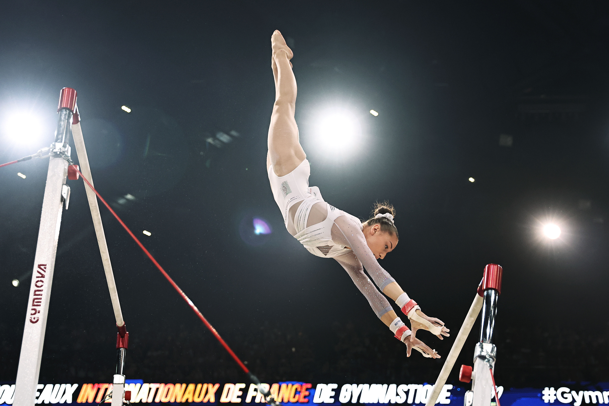

×
Sa Propre Figure :
Le Nemour
Source: Fédération Internationale de Gymnastique
Retrouvez l'enchaînement du Nemour parmis ceux ci-dessous !
Correct !
En mai 2023, Kaylia a présenté pour la première fois un mouvement inédit, le Nemour, que son coach Marc Chirilcenco a créé pour elle. La Fédération internationale de gymnastique lui a attribué la plus haute valeur de difficulté : G (0,7 points).
This was...